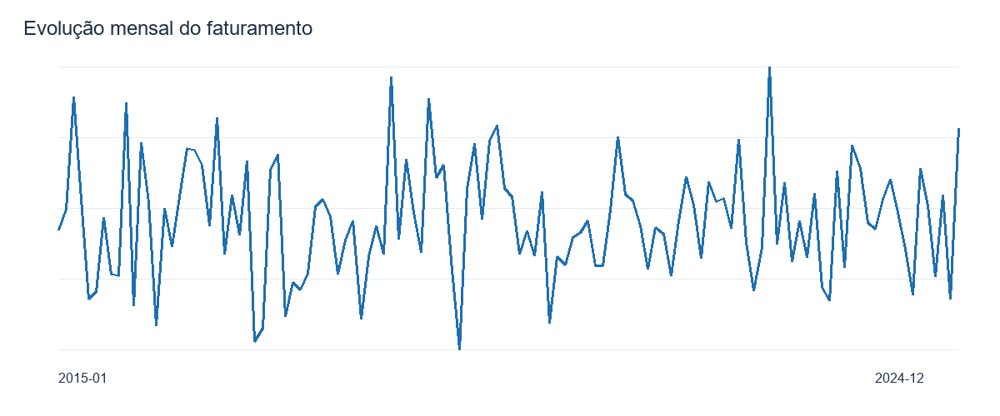
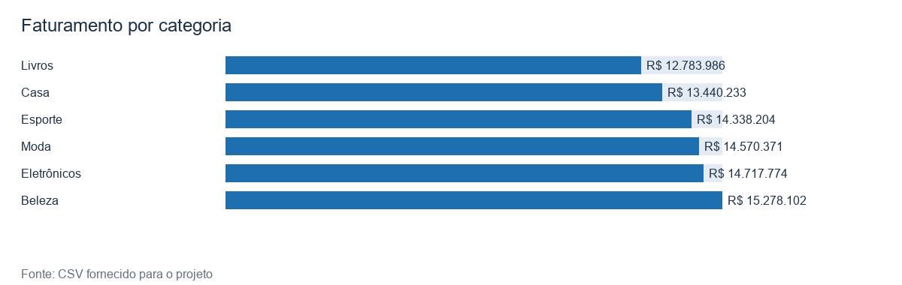
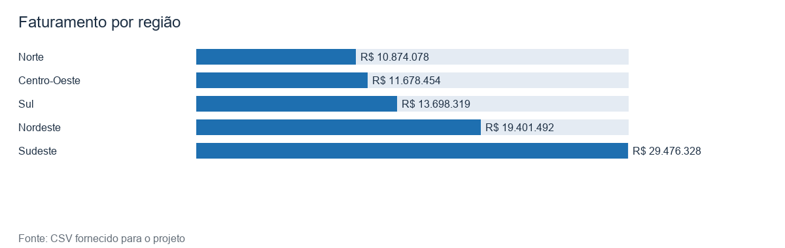

R$ 85.128.670,31
Objetivo
Investigar faturamento, produtos, regiões, sazonalidade, canais e desempenho logístico com análise exploratória e dashboard interativo.
A base contém 4.440 registros entre 2015-01 e 2024-12. Não há identificador de pedido; a média apresentada é por registro. O lucro foi preservado conforme informado na fonte e pode divergir de faturamento menos custo.
Indicadores da base
R$ 26.886.927,79
R$ 19.173,12
8,51 dias · 3,77/5
Comparações observadas
Região e UF líderes: Sudeste / RJ. Canal líder: Marketplace. Produto com mais unidades: Produto D. Categoria com maior soma do lucro informado: Beleza. Pico agregado: 11/2022.



Como explorar
Use o dashboard para filtrar os segmentos, comparar períodos, examinar logística e avaliação e baixar o recorte. O notebook explica a limpeza, os indicadores, os gráficos e os limites da análise.
Disciplina: Linguagens de Programação · Professor: Alexandre Neves Louzada · Aluno: Guilherme Oliveira de Moraes